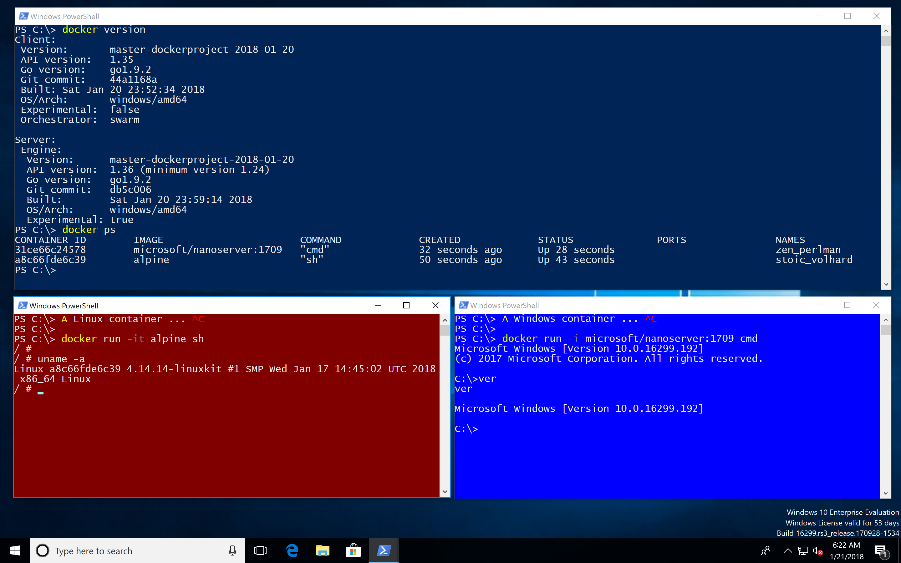

Last week a major pull request to support Linux Containers on Windows (LCOW) has landed in master branch of the Docker project. With that feature enabled you will be able to run both Linux and Windows containers side-by-side with a single Docker engine.
So let's have a look how a Windows 10 developer machine will look like in near future.

- The Docker command
docker pslists all your running Linux and Windows containers. - You can use volumes to share data between containers and the host.
- The containers can talk to each other over the container networks.
- You can publish ports to your host and use localhost. But wait, this is still a Windows Insider feature coming to Windows 10 1803 release.
Running Linux containers
At the moment you need to specify the --platform option to pull Linux images. This option is also needed when the specific Docker images is a multi-arch image for both Linux and Windows.
docker pull --platform linux alpine
Once you have pulled Linux images you can run them without the --platform option.
docker run alpine uname -a
To allow Windows run Linux containers a small Hyper-V VM is needed. The LinuxKit project provides an image for LCOW at https://github.com/linuxkit/lcow.
Shared volumes
Let's see how containers of different platforms can share data in a simple way. You can bind mount a volume into Linux and Windows containers.

The following example shares a folder from the host with a Linux and Windows container.
First create a folder on the Windows 10 host:
cd \
mkdir host
Run a Linux container
On the Windows 10 host run a Linux container and bind mount the folder as /test in the Linux container.
docker run -it -v C:\host:/test alpine sh
In the Linux container create a file in that mounted volume.
uname -a > test/hello-from-linux.txt
Run a Windows container
On the Windows 10 host run a Windows container and bind mount the folder as C:\test in the Windows container.
docker run -i -v C:\host:C:\test microsoft/nanoserver:1709 cmd
In the Windows container create a file in that mounted volume.
ver > test\hello-from-windows.txt
Result
On the Windows 10 host list the files in the shared folder
PS C:\> dir host
Directory: C:\host
Mode LastWriteTime Length Name
---- ------------- ------ ----
-a---- 1/21/2018 4:32 AM 85 hello-from-linux.txt
-a---- 1/21/2018 4:33 AM 46 hello-from-windows.txt
This is super convenient for development environments to share configuration files or even source code.
Drafting mixed workloads
With Docker Compose you can spin up a mixed container environment. I just did these first steps to spin up a Linux and Windows web server.
version: "3.2"
services:
web1:
image: nginx
volumes:
- type: bind
source: C:\host
target: /test
ports:
- 80:80
web2:
image: stefanscherer/hello-dresden:0.0.3-windows-1709
volumes:
- type: bind
source: C:\host
target: C:\test
ports:
- 81:3000
networks:
default:
external:
name: nat
Think of a Linux database and a Window front end, or vice versa...
Build your own LCOW test environment
If you want to try LCOW yourself I suggest to spin up a fresh Windows 10 1709 VM.
Azure
I have tested LCOW with a Windows 10 1709 VM in Azure. Choose a V3 machine to have nested hypervisor which you will need to run Hyper-V containers.
Containers and Hyper-V
Enable the Containers feature and Hyper-V feature:
Enable-WindowsOptionalFeature -Online -FeatureName containers -All -NoRestart
Enable-WindowsOptionalFeature -Online -FeatureName Microsoft-Hyper-V -All -NoRestart
LinuxKit
Now install the LinuxKit image for LCOW. I have catched the latest from a CircleCI artifact, but soon there will be a new release in the linuxkit/lcow repo.
Invoke-WebRequest -OutFile "$env:TEMP\linuxkit-lcow.zip" "https://23-111085629-gh.circle-artifacts.com/0/release.zip"
Expand-Archive -Path "$env:TEMP\linuxkit-lcow.zip" -DestinationPath "$env:ProgramFiles\Linux Containers" -Force
Docker nightly build
Now download and install the Docker engine. As this pull request only landed in master branch we have to use the nightly build for now.
Invoke-WebRequest -OutFile "$env:TEMP\docker-master.zip" "https://master.dockerproject.com/windows/x86_64/docker.zip"
Expand-Archive -Path "$env:TEMP\docker-master.zip" -DestinationPath $env:ProgramFiles -Force
The next command installs the Docker service and enables the experimental features.
. $env:ProgramFiles\docker\dockerd.exe --register-service --experimental
Set the PATH variable to have the Docker CLI available.
[Environment]::SetEnvironmentVariable("Path", $env:Path + ";$($env:ProgramFiles)\docker", [EnvironmentVariableTarget]::Machine)
Now reboot the machine to finish the Containers and Hyper-V installation. After the reboot the Docker engine should be up and running and the Docker CLI can be used from the PowerShell terminal.
Local Vagrant environment
If you have Vagrant installed with Hyper-V or VMware as your hypervisor, you can spin up a local test environment with a few commands.
First clone my GitHub repo docker-windows-box which has a LCOW environment to play with.
git clone https://github.com/StefanScherer/docker-windows-box
cd docker-windows-box
cd lcow
vagrant up
This will download the Vagrant base box if needed, spins up the Windows 10 VM and automatically installs all features shown above.
Conclusion
With all these new Docker features coming to Windows in the next few months, Windows 10 is evolving to the most interesting developer platform in 2018.
Imagine what's possible: Use a docker-compose.yml to spin up a mixed scenario with Linux and Windows containers, live debug your app from Visual Studio Code, and much more.
If you liked this blog post please share it with your friends. You can follow me on Twitter @stefscherer to stay updated with Windows containers.